ggOceanMaps cookbook
Mikko Vihtakari (Institute of Marine Research)
19 June, 2026
Source:vignettes/cookbook.Rmd
cookbook.RmdA collection of short, self-contained recipes for common ggOceanMaps tasks. Each recipe is meant to be copy-pasteable. For background and the conceptual walk-through, see the user manual.
Most recipes below run live and show their actual output; the first call for a polar or web-service region downloads or fetches data and caches it, so it may take a moment to build. The handful of recipes that need a file only you can supply (your own GEBCO/ETOPO/IBCAO grid) show a pre-rendered figure instead.
Choosing a region
How do I plot the Arctic / Antarctic?
A single value in limits means “polar projection bounded
at this latitude”:
basemap(60) # Arctic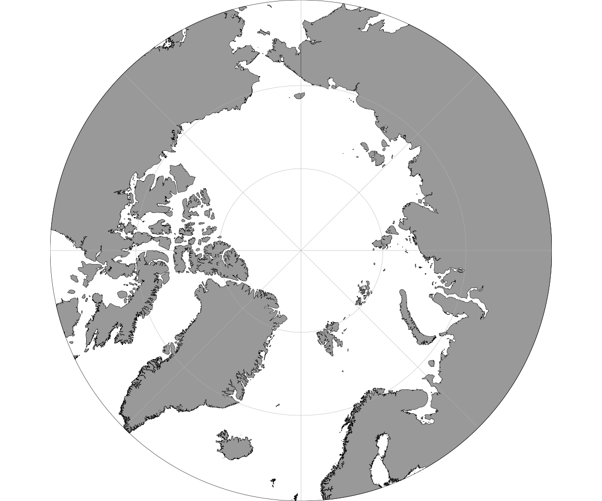
basemap(-60) # Antarctic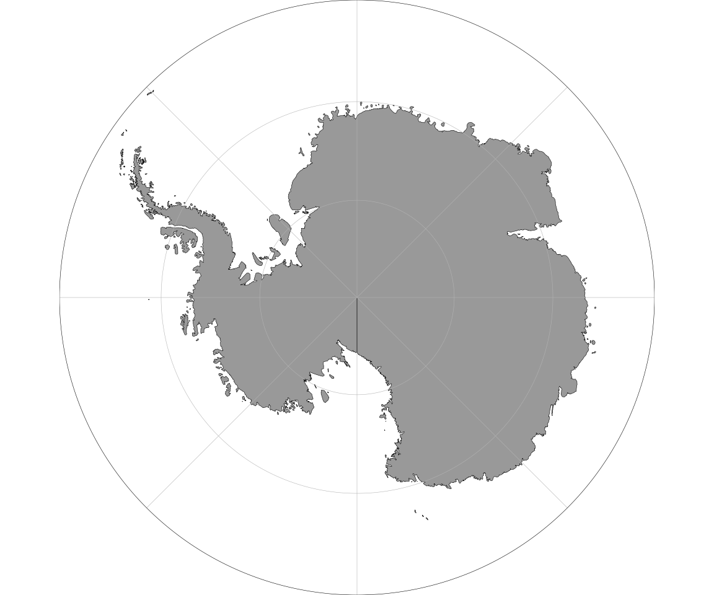
How do I plot a region that crosses the antimeridian?
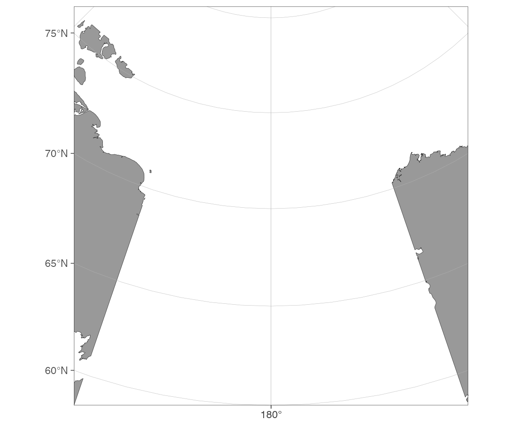
Without rotate = TRUE you’ll get the whole world with a
message; with it, ggOceanMaps rotates the projection so the antimeridian
sits in the middle.
How do I fit the map to my data automatically?
dt <- data.frame(lon = c(-150, 150), lat = c(60, 85))
basemap(data = dt, rotate = TRUE)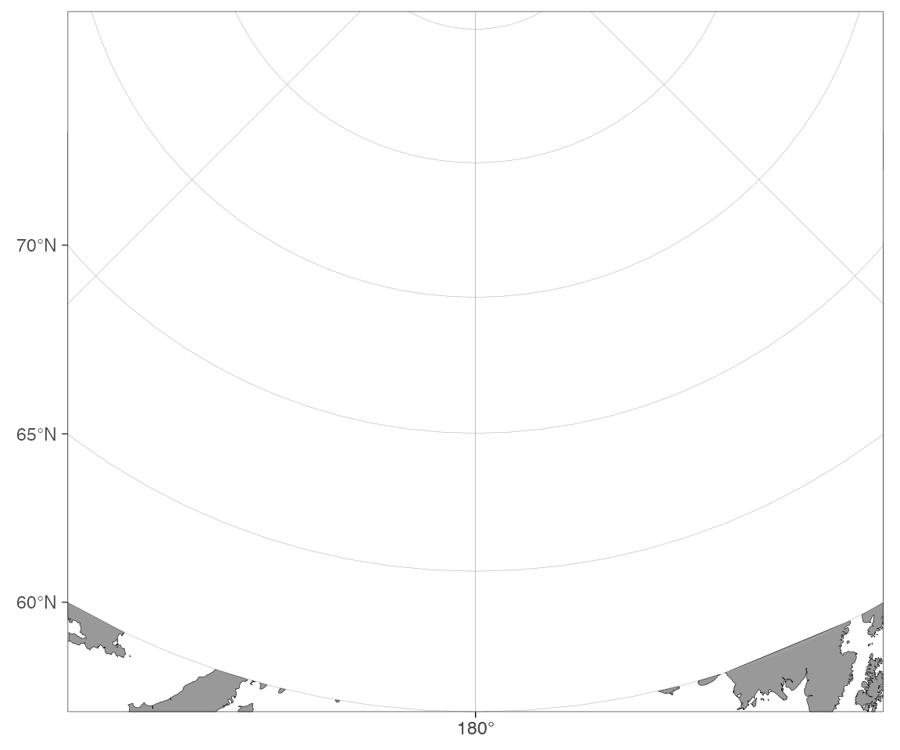
Adding your own data
How do I add points to a decimal-degree map?
dt <- data.frame(lon = c(0, 10, 20), lat = c(55, 60, 65))
basemap(limits = c(-10, 30, 50, 70), shapefiles = "DecimalDegree") +
geom_point(data = dt, aes(x = lon, y = lat), color = "red", size = 3)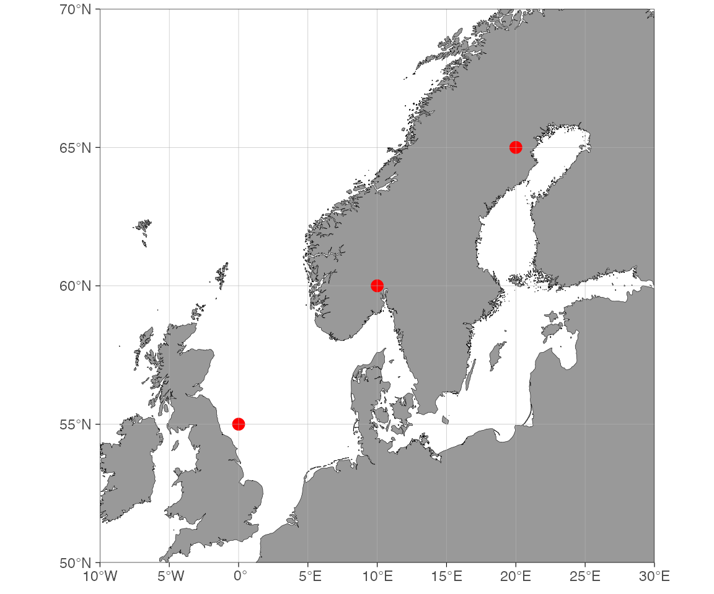
How do I add points to a projected map?
Note that the map above will get projected automatically if we do not define the shapefile argument and requires transforming the plotted coordinates:
basemap(limits = c(-10, 30, 50, 70)) +
geom_point(
data = transform_coord(dt),
aes(x = lon, y = lat),
color = "red",
size = 3
)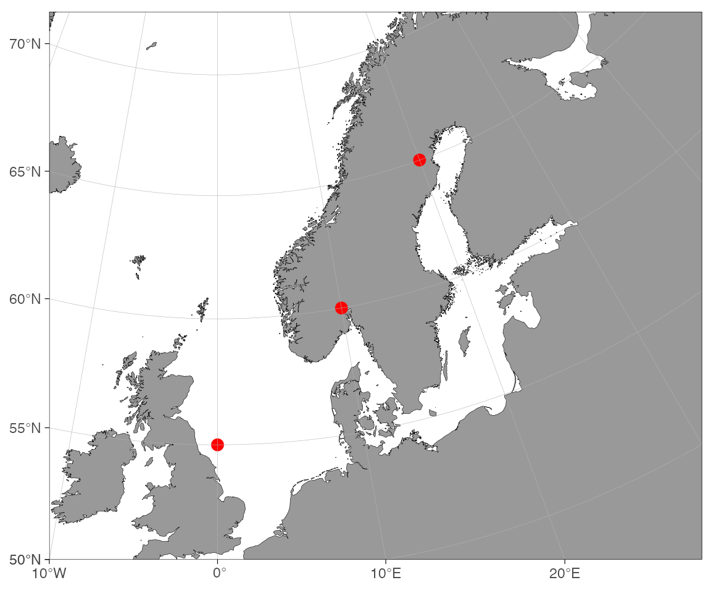
Projected maps (polar, custom CRS) need the coordinates transformed first:
dt <- data.frame(lon = c(0, 10, 20), lat = c(70, 75, 80))
dt <- transform_coord(dt, bind = TRUE) # adds lon.proj, lat.proj
basemap(60) +
geom_point(
data = dt,
aes(x = lon.proj, y = lat.proj),
color = "red",
size = 3
)
Or let ggspatial handle the transform:
basemap(60) +
ggspatial::geom_spatial_point(
data = dt,
aes(x = lon, y = lat),
crs = 4326,
color = "red",
size = 3
)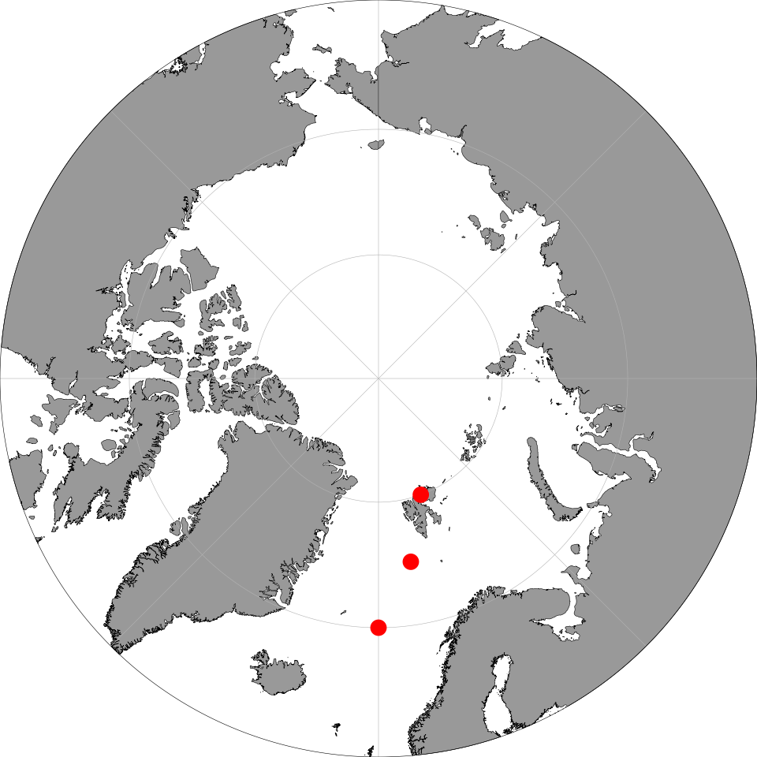
Bathymetry
How do I add bathymetry without downloading anything?

This uses the binned-blues raster shipped with the package.
How do I get higher-resolution bathymetry?
High-resolution pre-made shapefiles live in the ggOceanMapsLargeData
repository. They are not bundled with the package (too large for CRAN);
basemap() downloads them on first use and caches them
locally.
Step 1 — set a permanent cache directory (add to
~/.Rprofile once):
options(ggOceanMaps.datapath = "~/ggOceanMaps_data")Without this the files land in tempdir() and are
re-downloaded each session.
Step 2 — request any map that needs high-res data:
# Arctic raster bathymetry
basemap(60, bathymetry = TRUE)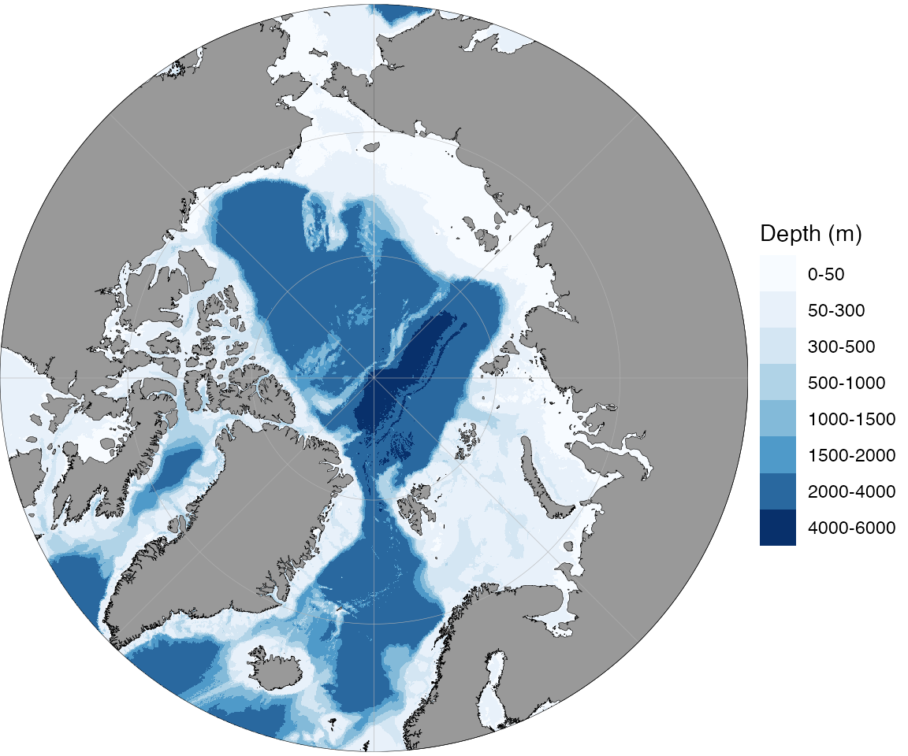
# North Sea with polygon bathymetry contours
basemap(limits = c(-5, 10, 50, 60), bathy.style = "poly_blues")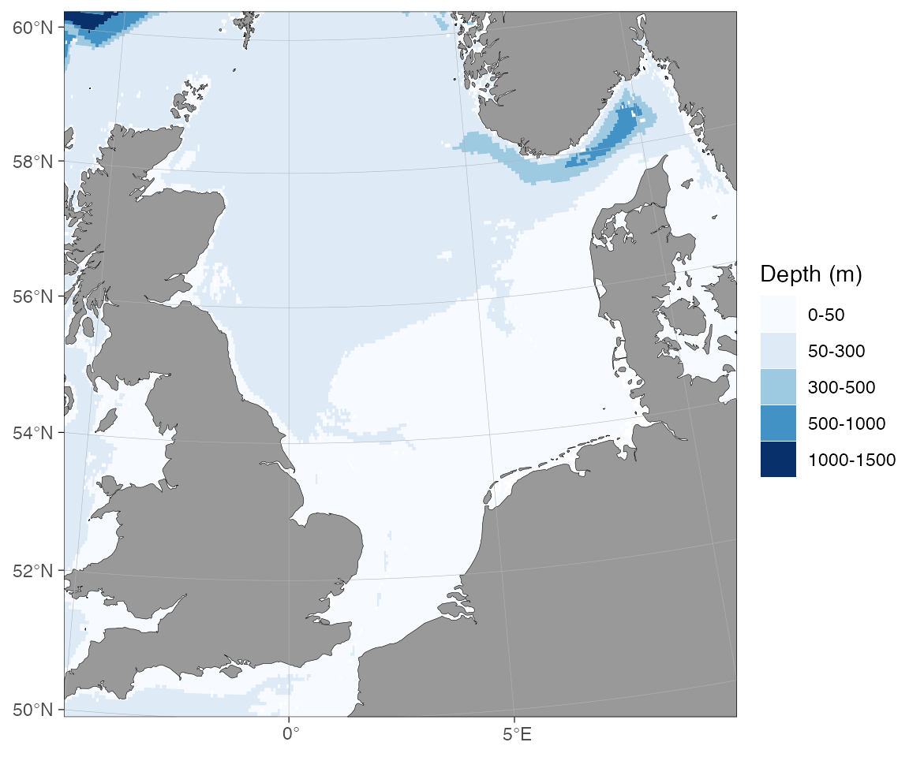
On the first call you will be prompted to download the required
.rda file (~15–100 MB per region). After that the file is
reused from disk instantly.
How do I use my own bathymetry raster (e.g. GEBCO, ETOPO, IBCAO)?
Download the grid from the source (GEBCO,
ETOPO
2022) and save it as a NetCDF (.nc) or GeoTIFF
(.tif).
Quick route — point ggOceanMaps.userpath at the
file:
options(ggOceanMaps.userpath = "path/to/your/bathymetry.nc")
basemap(limits = c(11, 16, 67.3, 68.6), bathy.style = "raster_user_blues")
# or the abbreviation:
basemap(limits = c(11, 16, 67.3, 68.6), bathy.style = "rub")
rub)
off Lofoten, northern Norway.basemap() crops to the plot extent, sign-flips (negative
depths → positive), and renders the raster automatically. Use
"raster_user_greys" / "rug" for greyscale. The
downsample argument reduces resolution if the native grid
is too fine for the plot size.
Manual route — pre-process for full control:
rb <- raster_bathymetry(
"path/to/your/bathymetry.nc",
depths = NULL, # continuous raster; use a depth vector for polygons
boundary = c(11, 16, 67.3, 68.6) # crop early to save memory
)
# A raw continuous raster needs an explicit continuous style ("rcb"); the
# bathymetry = TRUE default assumes pre-binned data like dd_rbathy.
basemap(
limits = c(11, 16, 67.3, 68.6),
shapefiles = list(land = dd_land, glacier = NULL, bathy = rb$raster),
bathy.style = "rcb"
)The manual route is also the entry point for vectorizing the bathymetry (depth contour polygons) — see the Building your own shapefiles section below.
How do I fetch bathymetry on demand from a web service?
Two WCS sources are wired into basemap() — pick by
region:
| Style alias | Abbrev. | Source | Coverage | Resolution |
|---|---|---|---|---|
wcs_emodnet_blues |
wemb |
EMODnet | European waters | ~115 m |
wcs_emodnet_grays |
wemg |
EMODnet | European waters | ~115 m |
wcs_etopo_blues |
wceb |
ETOPO1 (NOAA NCEI) | Global | ~1.85 km |
wcs_etopo_grays |
wceg |
ETOPO1 (NOAA NCEI) | Global | ~1.85 km |
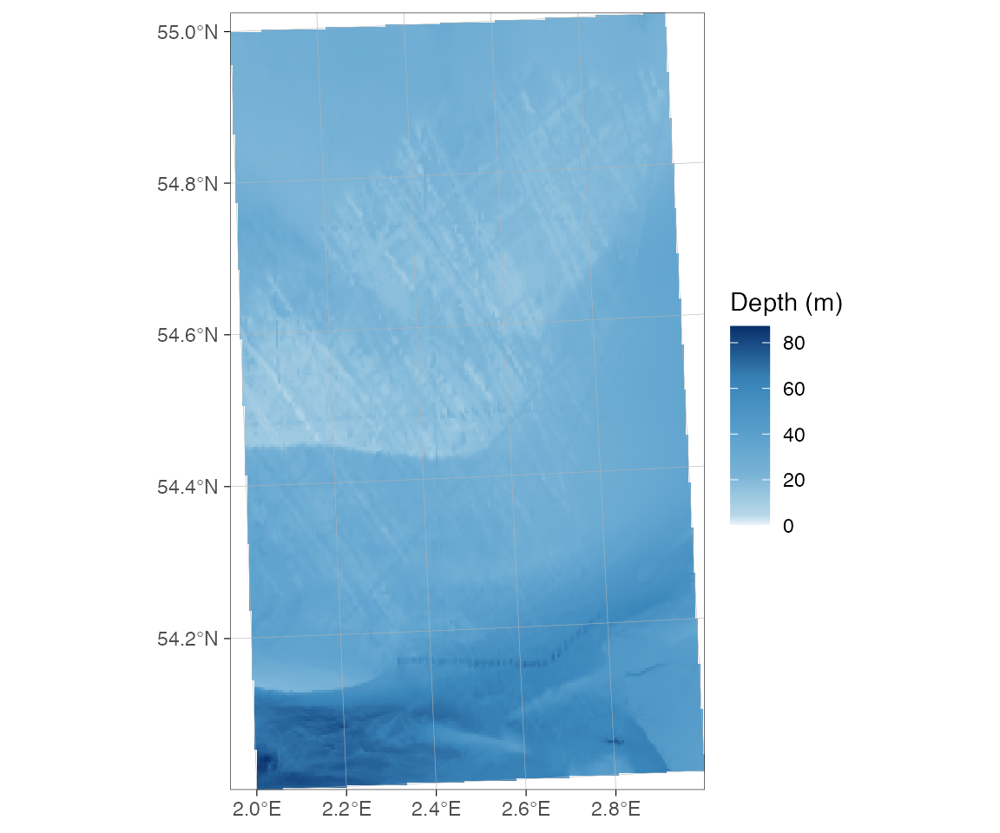
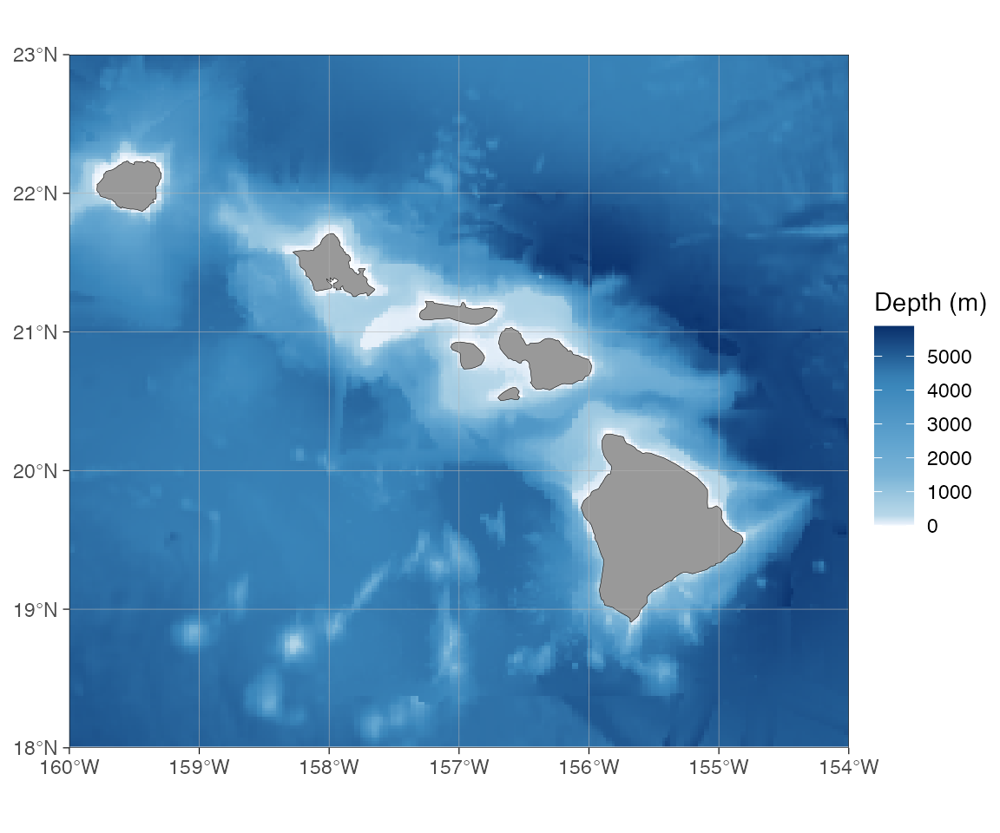
# Indonesia / Java Trench — also ETOPO (outside EMODnet)
basemap(c(100, 130, -15, 10), bathy.style = "wceb")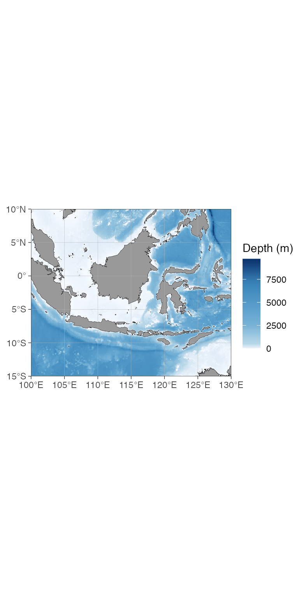
For a manual fetch (e.g. to pass through
vector_bathymetry() for a custom shapefile workflow), call
wcs_bathymetry() directly. As with the user-raster route
above, a raw fetched raster is continuous, so pair it with an explicit
bathy.style = "rcb" rather than
bathymetry = TRUE:
bathy <- wcs_bathymetry(c(2, 3, 54, 55), source = "emodnet")
#> | | | 0% | |========= | 12% | |================== | 25% | |========================== | 38% | |=================================== | 50% | |============================================ | 62% | |==================================================== | 75% | |============================================================= | 88% | |======================================================================| 100%
basemap(
c(2, 3, 54, 55),
shapefiles = list(land = dd_land, glacier = NULL, bathy = bathy$raster),
bathy.style = "rcb"
)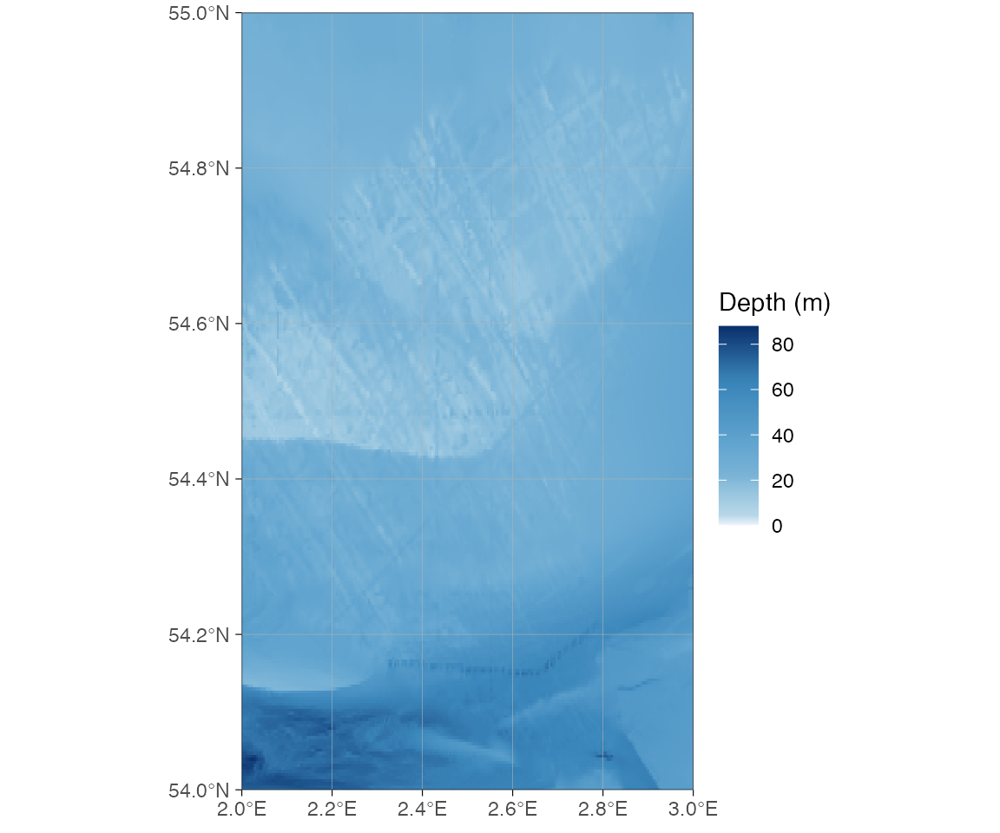
Requirements / caveats:
- Decimal-degree limits only; polar maps are not supported.
- EMODnet covers European regional seas only (≈−36° to 43° lon, ≈15° to 90° lat). Outside that, use ETOPO. ggOceanMaps will error with a clear message and the suggested alternative if you pick the wrong source.
-
Bbox size is capped per source: 50°² for EMODnet
(~115 m grid), 2000°² for ETOPO (~1.85 km grid). Override with
max_area_deg2for larger requests; the function tiles automatically. -
Caching uses
getOption("ggOceanMaps.datapath")(ortempdir()as fallback). Set it permanently in.Rprofilefor cross-session reuse. - Citation: EMODnet is CC-BY (https://emodnet.ec.europa.eu/en/bathymetry); ETOPO1 is Amante & Eakins 2009, NOAA NGDC (https://www.ncei.noaa.gov/products/etopo-global-relief-model).
Building your own shapefiles
How do I make land + bathymetry from a downloaded raster?
The full pipeline from a single source raster (GEBCO, ETOPO, IBCAO, …) to a matched land + bathymetry pair is:
library(ggOceanMaps)
north_sea <- c(-5, 10, 50, 60)
# 1. Process the raster — crop, sign-flip, bin depth levels.
# drop.crumbs is left NULL: vector_bathymetry()/vector_land() each apply it
# independently, so a shared non-NULL threshold can drop a small island from
# one layer without dropping the matching sliver of shallow water from the
# other, leaving tiny gaps right at the coast.
rb <- raster_bathymetry(
"path/to/your/bathymetry.nc",
depths = c(20, 50, 100, 200, 500), # depth contour break points
boundary = north_sea,
estimate.land = TRUE # keep land cells for vector_land()
)
# 2a. Vectorize bathymetry to depth-polygon shapefile
vb <- vector_bathymetry(rb, drop.crumbs = NULL)
# 2b. Vectorize land from the same raster
vl <- vector_land(rb, drop.crumbs = NULL)
# 2c. GEBCO/ETOPO/IBCAO grids are read with a non-standard "unknown" CRS
# (axis order lat/lon instead of lon/lat), which slants the clip box if left
# as-is. Normalise both layers to plain EPSG:4326 before plotting.
vb <- sf::st_transform(vb, 4326)
vl <- sf::st_transform(vl, 4326)
# estimate.land = TRUE adds a "land" class to vb -- drop it, it belongs in vl.
vb <- vb[vb$depth != "land", ]
vb$depth <- droplevels(vb$depth)
# 3. Plot — plug both into basemap(). Vector bathymetry needs an explicit
# bathy.style ("pb" here); bathymetry = TRUE alone assumes a raster.
basemap(
limits = north_sea,
shapefiles = list(land = vl, glacier = NULL, bathy = vb),
bathy.style = "pb"
)
Use depths = NULL instead of a depth vector to keep the
raster as a continuous grid (skips vectorization, faster rendering).
Pass the result straight to basemap() as the
bathy shapefile, again with an explicit continuous
style:
rb_cont <- raster_bathymetry(
"path/to/your/bathymetry.nc",
depths = NULL,
boundary = north_sea
)
basemap(
limits = north_sea,
shapefiles = list(land = dd_land, glacier = NULL, bathy = rb_cont$raster),
bathy.style = "rcb"
)Tip: save the processed objects as .rda
files so you don’t have to re-process the full raster every session:
save(vb, vl, file = "north_sea_bathy.rda")How do I clip an existing shapefile to my region?
Use clip_shapefile() to crop any sf polygon layer to a
bounding box — here the shipped dd_land, cropped to the
North Sea:
land <- clip_shapefile(dd_land, limits = c(-5, 10, 50, 60))
basemap(shapefiles = list(land = land, glacier = NULL, bathy = NULL))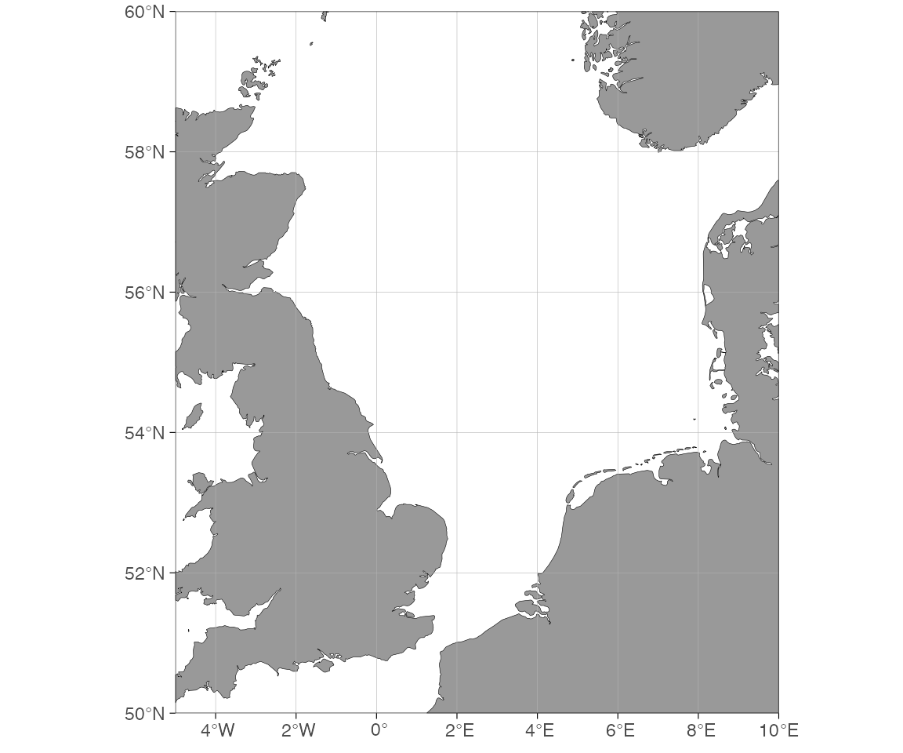
clip_shapefile() handles both decimal-degree and
projected inputs. For projected data specify proj.out (a
CRS string / EPSG code) to get the result back in the map’s native
projection.
Special cases
How do I draw ocean current vectors over a map?
The pattern is: get u/v current components on a grid, thin it to a
drawable density, transform coordinates to the map’s CRS, then draw
arrows with geom_segment(). The example below builds a
small synthetic field with dist2land() filtering out land
points, so it is fully self-contained; the same pattern applies after
reading real u/v components from a NetCDF file
with stars::read_stars().
transform_coord() is needed below even though these
limits look like an ordinary decimal-degree box: latitudes this far
north (50–70°N) select the Arctic polar projection automatically (see
?basemap), and coord_sf() still labels the
axes in plain degrees, so the projection is easy to miss (see the Adding graphical
elements article for more on this pattern):
grd <- expand.grid(lon = seq(-14, 6, by = 4), lat = seq(57, 69, by = 3))
grd <- dist2land(grd, binary = TRUE, dist.col = "ocean", verbose = FALSE)
grd <- grd[grd$ocean, ] # drop points on land
grd$u <- 0.35 + 0.25 * cos((grd$lat - 58) / 4) # eastward component
grd$v <- 0.20 * sin((grd$lon + 5) / 6) # northward component
# Display scale only: a 1 m/s vector is drawn as 50 hours of drift.
km_per_ms <- 50 * 3.6
grd$lon_end <- grd$lon +
(grd$u * km_per_ms) / (111.32 * cos(grd$lat * pi / 180))
grd$lat_end <- grd$lat + (grd$v * km_per_ms) / 110.57
# Transform both ends of each arrow to the basemap's actual CRS.
start <- transform_coord(
grd,
lon = "lon",
lat = "lat",
proj.out = 3995,
bind = TRUE
)
end <- transform_coord(
grd,
lon = "lon_end",
lat = "lat_end",
proj.out = 3995,
new.names = c("lon_end.proj", "lat_end.proj")
)
grd <- cbind(start, end)
basemap(
limits = c(-20, 30, 50, 70),
bathy.style = "rbg",
land.col = "grey86",
legends = FALSE
) +
geom_segment(
data = grd,
aes(x = lon.proj, y = lat.proj, xend = lon_end.proj, yend = lat_end.proj),
arrow = arrow(length = unit(0.12, "cm"), type = "open"),
colour = "#084d9a",
linewidth = 0.45
)
On an explicitly polar map the pattern is identical
— only the region and projection differ. The example below moves further
north into the Arctic Ocean and uses a synthetic zonal (eastward) flow,
which traces a clean circumpolar gyre around the pole;
bathy.style = "poly_greys" keeps the background quiet so
the arrows stand out:
grd <- expand.grid(lon = seq(-180, 165, by = 15), lat = seq(81, 87, by = 3))
grd <- dist2land(grd, binary = TRUE, dist.col = "ocean", verbose = FALSE)
grd <- grd[grd$ocean, ]
grd$u <- 0.4 # pure eastward flow traces a circle around the pole
grd$v <- 0
km_per_ms <- 80 * 3.6
grd$lon_end <- grd$lon +
(grd$u * km_per_ms) / (111.32 * cos(grd$lat * pi / 180))
grd$lat_end <- grd$lat + (grd$v * km_per_ms) / 110.57
start <- transform_coord(
grd,
lon = "lon",
lat = "lat",
proj.out = 3995,
bind = TRUE
)
end <- transform_coord(
grd,
lon = "lon_end",
lat = "lat_end",
proj.out = 3995,
new.names = c("lon_end.proj", "lat_end.proj")
)
grd <- cbind(start, end)
basemap(75, bathy.style = "poly_greys") +
geom_segment(
data = grd,
aes(x = lon.proj, y = lat.proj, xend = lon_end.proj, yend = lat_end.proj),
arrow = arrow(length = unit(0.15, "cm")),
color = "#0c5ba0",
linewidth = 0.5
)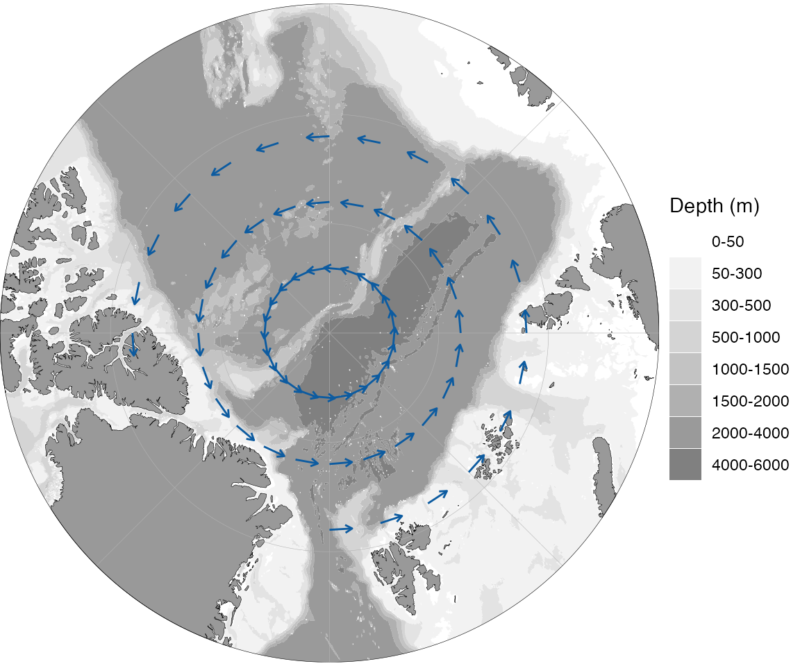
How do I add ICES or Norwegian fishery zones?
ggOceanMaps ships three zone datasets:
| Object | Coverage | Example use |
|---|---|---|
ices_areas |
ICES advisory areas | subareas, divisions, subdivisions |
fdir_main_areas |
Norwegian Directorate of Fisheries main areas | polygon chart |
fdir_sub_areas |
Norwegian Directorate of Fisheries sub-areas | finer grid |
All three are sf polygon objects and can be passed straight to
basemap() for automatic limits or overlaid with
geom_sf():
# Fit map to the extent of the ICES areas and draw them as red outlines
p <- basemap(ices_areas) +
geom_sf(data = ices_areas, fill = NA, color = "red", linewidth = 0.4)
# reorder_layers() pushes land/glacier/grid back on top of the outlines, and
# geom_sf_text() labels each area at its centroid (Area_Full's "27." prefix
# is common to all ICES areas, so it is stripped for shorter labels).
reorder_layers(p) +
geom_sf_text(
data = suppressWarnings(sf::st_centroid(sf::st_make_valid(ices_areas))),
aes(label = gsub("27.", "", Area_Full)),
size = FS(8),
fontface = 2,
color = "red"
)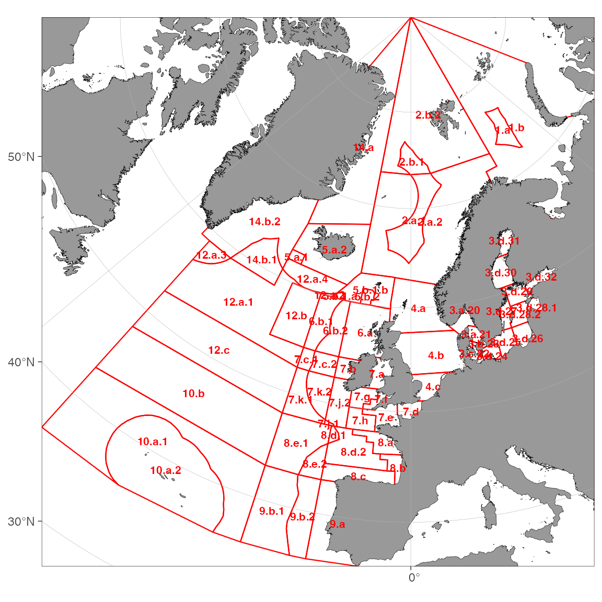
# Norwegian fisheries zones with filled polygons
basemap(fdir_main_areas, bathymetry = TRUE) +
geom_sf(data = fdir_main_areas, fill = NA, color = "orange") +
geom_sf_label(data = fdir_main_areas, aes(label = main_area))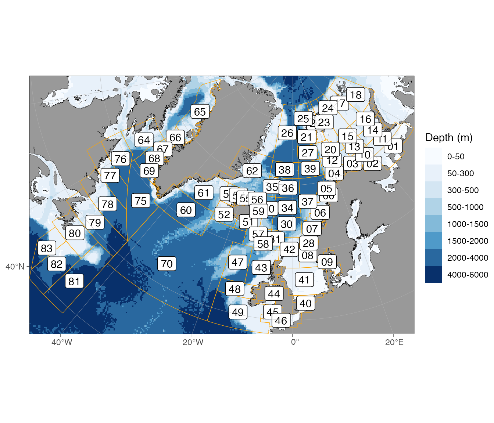
Label columns: ices_areas$Area_Full (full area name),
ices_areas$SubArea, ices_areas$Major_FA;
fdir_main_areas$main_area;
fdir_sub_areas$main_area,
fdir_sub_areas$sub_area.
Customising appearance
How do I add a scale bar and north arrow?
Use the ggspatial annotations:
basemap(limits = c(-75, -45, 62, 78), rotate = TRUE) +
ggspatial::annotation_scale(location = "br") +
ggspatial::annotation_north_arrow(location = "tr", which_north = "true")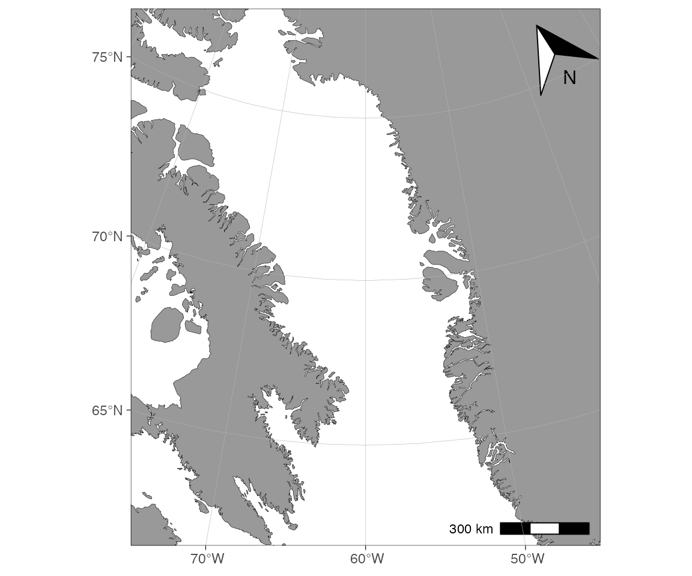
The north arrow points to true north where it sits, and the scale bar is exact at the projection’s reference latitude (71°N for Arctic stereographic maps).
How do I colour the ocean (panel background)?
The ocean is the ggplot panel. Colour it via
theme(), and set panel.ontop = FALSE so the
fill sits under the map:
basemap(c(-20, 15, 50, 70), grid.col = "red", grid.size = 0.5) +
theme(panel.background = element_rect(fill = "lightblue"),
panel.ontop = FALSE)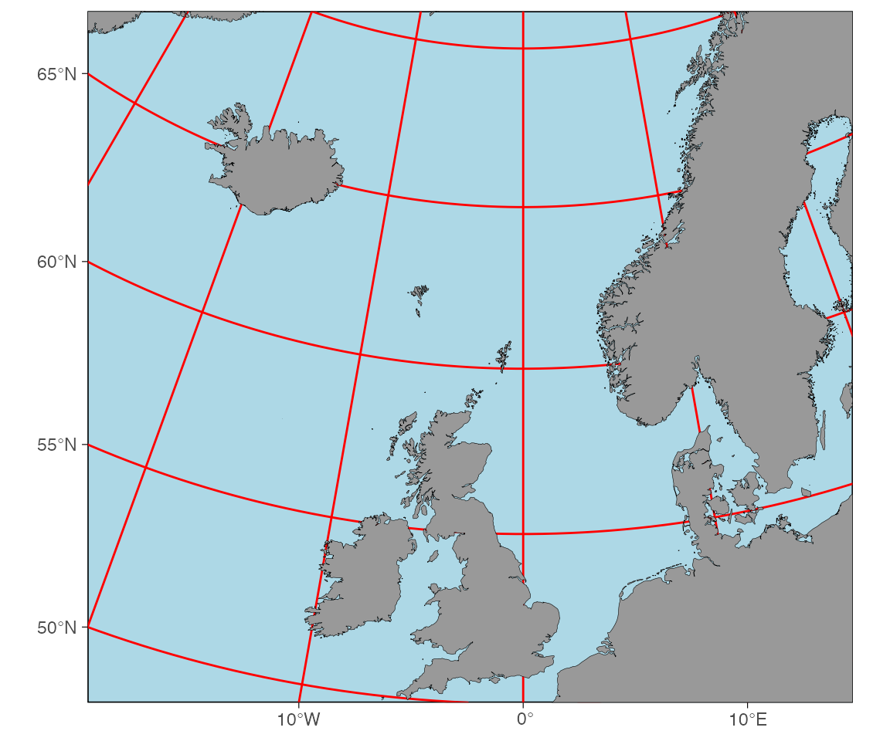
How do I put graticules below my data instead of on top?
ggOceanMaps draws graticules on top by default
(panel.ontop = TRUE). Flip it:
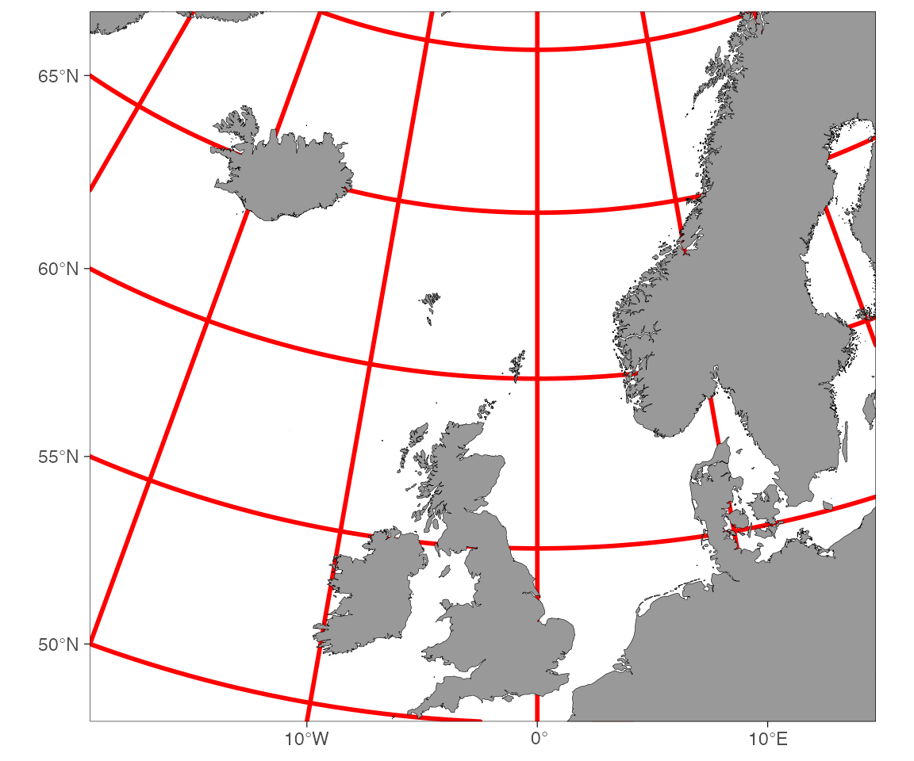
How do I add a second fill scale on top of bathymetry?
Bathymetry already uses the fill aesthetic, so a second
filled layer needs a fresh scale. The cleanest way is ggnewscale:
basemap(limits = c(-20, 15, 50, 70), bathymetry = TRUE,
bathy.style = "poly_greys") +
ggnewscale::new_scale_fill() +
ggspatial::annotation_spatial(ices_areas, aes(fill = Area_Full), alpha = 0.4) +
theme(legend.position = "none")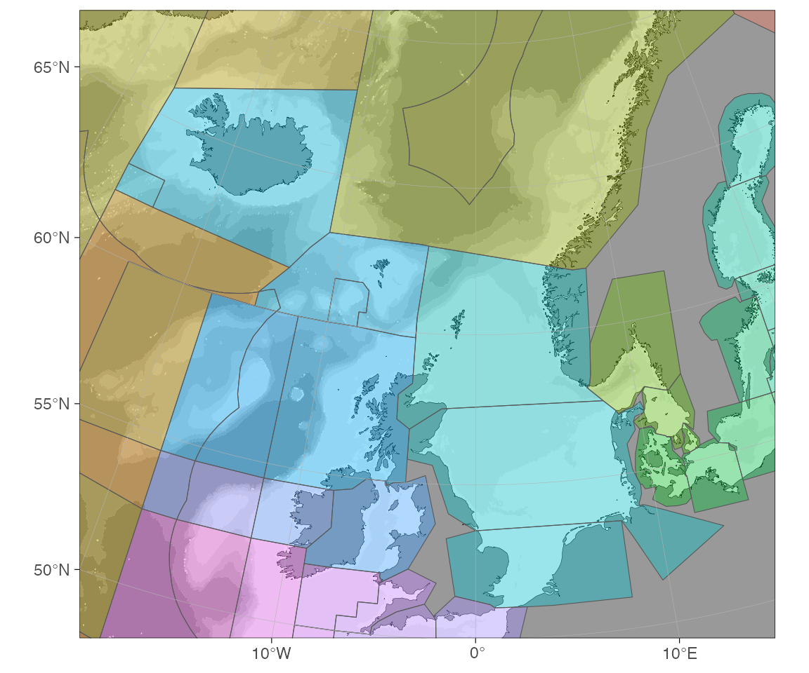
Alternatively, use a non-fill bathymetry style
(e.g. bathy.style = "contour_blues") so the
fill aesthetic stays free for your data.
How do I add longitude/latitude labels to a polar map?
Polar maps need manual labels. Pull the grid lines from the map’s attributes, keep one meridian/parallel, project the label positions, and draw them:
p <- basemap(-60, shapefiles = "Antarctic")
# Latitude labels along the 180° meridian
lat_lab <- as.data.frame(
sf::st_coordinates(attributes(p)$map.grid$lat.grid.lines))
lat_lab <- lat_lab[lat_lab$X == -180, ]
lat_lab <- rbind(lat_lab, data.frame(X = -180, Y = -90, L1 = 3, L2 = 1))
lat_lab <- transform_coord(lat_lab, proj.out = attributes(p)$crs, bind = TRUE)
# Longitude labels just outside the -60° parallel
lon_lab <- as.data.frame(
sf::st_coordinates(attributes(p)$map.grid$lon.grid.lines))
lon_lab <- lon_lab[lon_lab$Y == -60, ]
lon_lab$Y <- -63
lon_lab <- transform_coord(lon_lab, proj.out = attributes(p)$crs, bind = TRUE)
p +
geom_text(data = lat_lab,
aes(x = lon.proj, y = lat.proj, label = paste0(abs(Y), "\u00B0S"))) +
geom_text(data = lon_lab,
aes(x = lon.proj, y = lat.proj,
label = ifelse(sign(X) == 1, paste0(abs(X), "\u00B0E"),
paste0(abs(X), "\u00B0W")))) +
theme(plot.margin = margin(0.25, 0.25, 0.25, 0.25, "cm"))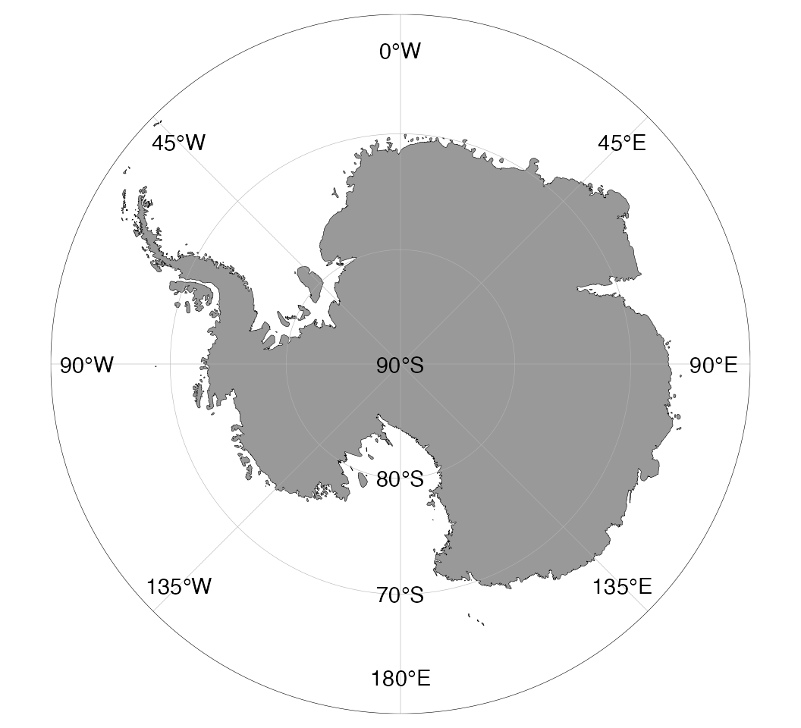